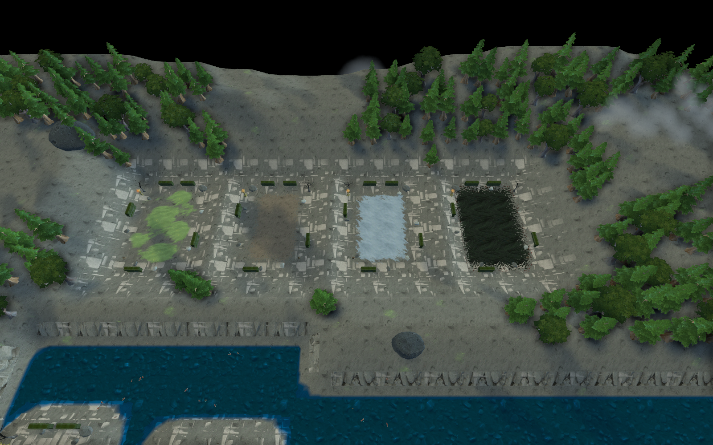
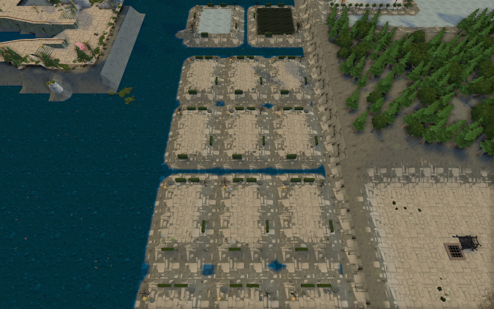
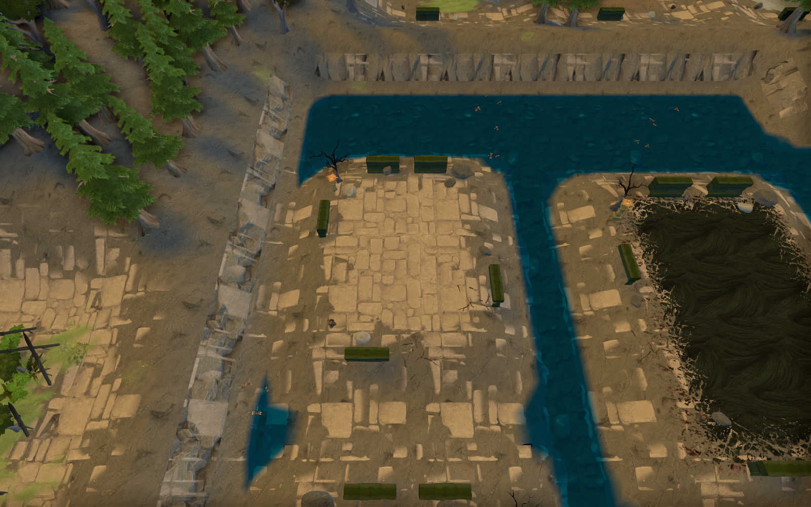
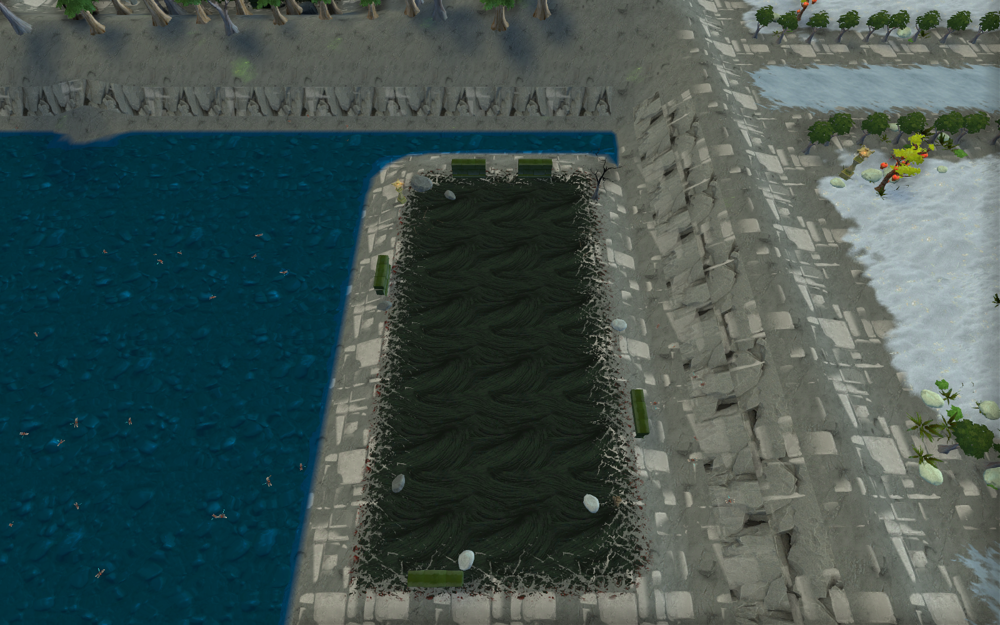
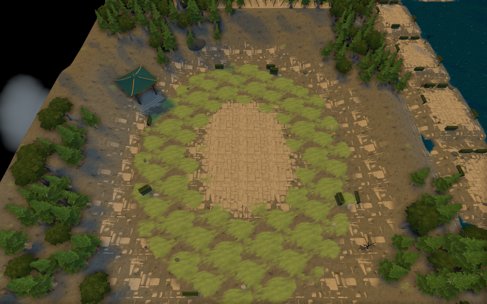

月下荒寺 · 挑战房间
收起鲜艳树冠，让枯木、残墙、冷灰旧石与少量灯火构成更肃杀的战斗庭院。雪地、焦岩和荒土仍有各自的环境特征。
练功房Boss 房挑战场
练功房对比 · 相同镜头
 练功房近景 · 荒土、灰绿苔草和零散枯木，中心留空。
十诫 Boss 房对比 · 相同镜头
练功房近景 · 荒土、灰绿苔草和零散枯木，中心留空。
十诫 Boss 房对比 · 相同镜头

转生 Boss 房 · 旧石庭院与断墙，减少边缘装饰的拥挤感。

七宗罪挑战场 · 炭黑焦岩、低饱和余烬与枯木。

原创挑战场 · 开阔的荒寺庭院。
查看地图检查记录 · 本轮修改说明